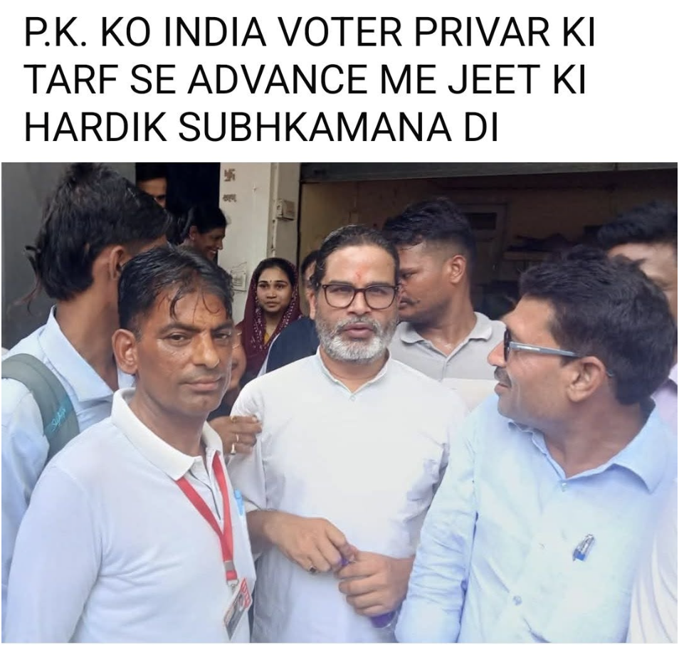

Bihar Ground Zero
✓ Field Verified

📍 Bankipur, Patna · Bihar
Meeting Prashant Kishor & Bankipur Bihar Prediction
India Voter predicted the political shift in Bankipur well before results. Chief correspondent Vijay Godara met Jan Suraaj founder Prashant Kishor during high-intensity grassroots polling.